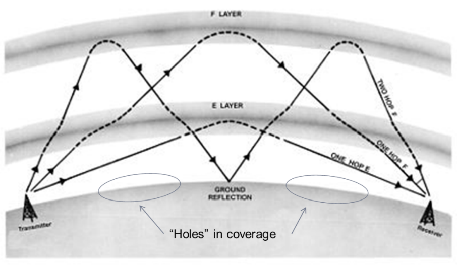

20 Communication Systems Testing
Written by Jim Fawcett james.fawcett@airbus.com
The below content is relative to CS25/Part 25 radio communications equipment testing, principally on large civil aircraft.
20.1 VHF Radios
20.1.1 Technology
Aeronautical very high frequency (VHF) radios are a line-of sight (LOS) technology within the frequency band 118.000-136.975 megahertz MHz and channel separations of 8.33 (historically 25) MHz. The typical output power on commercial aircraft is in the order of 25 watts W in AM (amplitude modulation) mode. Typically mounted on the fuselage-mounted, blade antennae best serve the wavelengths within the frequency band. Less common mounting locations include wing tips or the vertical tailplane.
Modern VHF radios include capacity for datalink communications within the same frequency band. Such radios are referred to as VDR (VHF Data Radio) or MVDR (Multiple VDR). V identifies mono-channel equipment with one avionics box per radio channel, whereas M identifies multi-channel equipment where one avionics box controls two radio channels.
Data communications currently employ one of two “modes.” Mode 2 (for ATN – Aircraft Telecommunications Network) has recently replaced mode A (Aircraft Communications Addressing and Reporting System - ACARS) due to higher throughput rates. Mode A remains deployed in some areas of the world.
To satisfy CS25/Part 25 certification requirements, a typical civil aircraft will have 3 VHF or VDR or 2 MVDR with 2 channels each, providing three VDR channels and one hot spare.
20.1.2 Test Objectives
The four principle objectives for voice functions are range, masking, control, and interference. When relevant, functional tests of data applications and switching between voice and data services should also be assessed.
Range performance
The theoretical maximum line of sight distance for a VHF radio with one station on an aircraft and one station on the ground at sea-level on a flat surface is
| \[\text{range} \left[ \text{NM} \right] \sim\ 1.06\sqrt{h \left[ \text{ft} \right]}\] |
Atmospheric refraction deflects electromagnetic waves and VHF signals may travel beyond line-of-sight by an amount varying slightly according to atmospheric conditions. A common memorable empirically-based relation is
| \[\text{range} \left[ \text{NM} \right] = 1.23\sqrt{h \left[ \text{ft} \right]}\] |
Transmission distance can increase if the ground station is above sea-level, or reduce if there is terrain between the aircraft and the ground station.
The minimum range performance to be demonstrated is 80% of the so-called “optical” (LOS) range, adjusted for altitude. Test at or above FL310.
Masking performance
As VHF is a LOS technology, any obstacle between the aircraft and the ground station can partially or totally attenuate signal strength. Such an obstacle may be on the ground (see comments on terrain in the section on range performance) but may also be any major aircraft structural element such as the fuselage, wings, tailplane, engines, or landing gear.
Perform masking checks at 65% of the optical range, adjusted for altitude, Test at or above FL310.
Audio and control integration
It is highly unusual for modern civil transport aircraft to operate VHF on a stand-alone basis. Typically, audio management system centralizes the audio which is available to all crew members through a variety of listening equipment (boomset, headset, loudspeaker). The crew controls radios via a management interface which may be a dedicated Radio Management Panel (RMP) or included in a display format. For new installations testing to include tuning from all combinations of radios and panels is needed.
Testers must verify the radios can be controlled correctly and the audio quality is correct. In the absence of a universally accepted and easily implemented objective solution for audio volume and clarity, the flight crew may use a subjective scale to judge for loudness and clearness. This will include a signal report on the transmission from the ground station as well.
| Signal | Question | Answer, Advice, or Order |
|---|---|---|
| QSA | What is the strength of my signals (or those of…)? |
|
| QRK | What is the intelligibility of my signals (or those of…)? |
|
Source: ITU Radio Regulations 1990, Appendix 13
Non-interference
By their nature as electromagnetic transmission systems, VHF radios can be an interference victim or source. This can take two forms: interaction between different VHF radios operating on similar frequencies, or interaction between the VHF system and other aircraft systems or interactions from other systems to the VHF system.
Concerning the first interaction, the relative proximity of aircraft VHF antennas make it difficult to avoid interference for frequency separations of less than 6 MHz. This can be easily identified for voice communications (interference on VHF radio X frequency A reception when VHF radio Y is emitting on frequency B) but can be more difficult to identify for data communications when the frequency used for data transmissions is not readily visible in the cockpit.
For interactions between VHF radios and different aircraft systems, the issue only occurs during VHF transmission by the aircraft due to the radiated power from the VHF antennae located close to other systems. Electromagnetic interference studies can predict the frequencies (or their harmonics) which may be problematic.
For new installations, interactions from the aircraft systems to the VHF receivers, an EMI ground test is needed to determine what, if any, interference is entering the receiver’s circuitry, either through the antenna or through wiring that will show up as a noise on a particular frequency. A spectrum analyser connected to the aircraft’s antennas, performing a scan throughout the entire VHF comm/nav band is needed to find any narrow band emissions from other systems that may be interfering. Checks at low, medium and high frequencies is no longer acceptable as most interference is now from narrow band emissions. For further details and recommendations, consult RTCA DO-160.
20.1.3 Test technique
Range performance
The aircraft flies outbound ≥ FL310 on any convenient radial from a calibrated ground station. The aircraft distance from the ground station is needed and most often determined via FMS or GPS. VOR/DME data, when the ground station is located close to VOR/DME equipment, can be used, but since VOR/DME is also a line-of-sight technology and the output power can be lower than for a VHF transmitter, it is likely that the VOR/DME range will be lost before voice communication is interrupted.
Every 5 NM (or more often, if required), a flight crew member calls a ground crew member who notes the transmission loudness/clarity. They then swap roles to determine aircraft reception. The checks continue until the loudness or clearness drops below 3, at which point the maximum range is considered to have been reached. It can nevertheless be useful to continue flying and testing outbound to characterise the distance at which there is a total loss of communication.
A few nautical miles after completing outbound communication testing, the aircraft should reverse course to fly inbound on any convenient radial from the calibrated ground station. Once again, calls should continue every 5 NM until the communication is re-established with a loudness/clearness of at least 3. Repeat the above check for each radio and antenna combination.
Depending on the antenna position, some masking may occur (e.g. tailplane masks a forward upper fuselage-mounted antenna during outbound legs). Results can demonstrate masking performance, or conversely justify any discrepancy in range obtained for outbound and inbound legs.
Masking performance
Longitudinal masking from the fuselage and/or tailplane having been identified during the range checks, only fuselage masking remains to be verified.
The aircraft flies a 360° turn to the left or to the right, centered at 65% of the optical range, adjusted for altitude, the test being performed ≥ FL310. To identify areas where there is a reduction in signal strength, verify transmission and reception loudness & clearness every 30° of heading. Demonstrate that reductions in strength are justified when considering the antenna location relative to the fuselage and taking into account the relative positions of the aircraft and the ground station. Repeat the check for each radio and antenna combination.
On occasion, checks may be performed with landing gear and/or flaps/slats extended. However, since such configurations usually correspond to landing configurations, the distance between the aircraft and the ground station is reduced and the radiated power is therefore usually sufficient for the signal to “get around” the masking element. In case of unusual antenna locations and/or aircraft configurations, additional masking checks may be required.
Audio and control integration
General use of VHF radios during the course of standard flight operations is usually enough to identify if there is an issue of audio and/or control integration. Nevertheless, it is important to ensure all available radios are controlled from all available RMPs and the audio performance is checked from all available crew member positions with all available communications means (boomset, headset, hand microphone/loudspeaker, oxygen mask, etc). Typically, comfortable audio levels should be confirmed at mid-range volume setting on any audio control device.
Non-interference
VHF / VHF
When listening on VHF radio X, transmit VHF radio Y frequencies previously agreed with the design office. Generally, do this at decreasing frequency spacings or on harmonic frequencies to assess the absence of interference, or acceptability level if interference occurs. Verify each combination of VHF and antenna. Such a test could be performed on the ground, but there is a strong potential for additional interference caused by signal reflections from surrounding infrastructure (buildings, ground, other aircraft or vehicles, etc.)
VHF / other aircraft systems
Evaluate the effect of each VHF radio transmission on other aircraft systems by transmitting on VHF frequencies previously agreed with the design office (almost always corresponding to harmonic frequencies for different aircraft systems).
Note that electromagnetic interference is not limited to systems with similar operating characteristics (e.g. radio navigation equipment). It may also concern other aircraft systems, particularly those with long and potentially not well-shielded wiring runs.
20.1.4 Weather conditions
VHF communications are not significantly affected by atmospheric conditions such as clouds or precipitation, wind or temperature. Therefore, there is no significant restriction when testing VHF radios - especially since it is often done at altitude in rather clear air. The only exception would be interference due to lightning when discharging in proximity.
20.1.5 Safety
VHF use for ATC purposes is part of standard operating procedures for air crews and is not considered an inherently risky test. Nevertheless, due to the multiple changes of frequency and radio under test, combined with the fact that often a test frequency rather than an ATC frequency is used, there is potential for losing the current ATC frequency. This can be compounded on aircraft types where the standby frequency is not synchronised between RMPs. Clear communication between the crew members about who is tuning which radio and using which RMP can mitigate any problems.
Ensure appropriate authorisations are in place for planned test frequencies. If an ATC frequency is used for some reason, avoid working heavily-used locations. Do not perform blind transmissions on a frequency without first listening for a while to see if that frequency is being used by other traffic.
20.1.6 Tips and hints
A common comment about audio quality is that “there is an echo.” This is usually due to more than one radio being tuned to the same frequency, thus both are heard simultaneously. It is therefore good practice to listen to only one radio at a time and ensure all radios are tuned to different frequencies.
VHF data frequencies range from 131 to 136 MHz. Therefore, in case of interference on voice frequencies above 125 MHz (i.e. below the 6 MHz separation limit), consider switching off the VHF data mode to see if this is the source of the interference.
Different radio types have different characteristics. Some may demonstrate a gradual loss of signal strength whereas others may have a more abrupt transition from intelligible to unintelligible. This is another reason to continue range checks beyond the loudness/clearness level 3.
The number of available VHF frequencies, even with 8.33 MHz spacing, is rather limited and the same frequencies are re-used at multiple ground stations. An aircraft at high altitude may be able to receive more than one ground station transmitting at the same frequency. Accordingly, ensure the right ground station is answering!
20.2 HF radios
20.2.1 Technology
The significant benefit of high frequency (HF) technology is the ability to communicate beyond line of sight. This is possible because the HF wavelengths (2-30 MHz with 1 kHz channel spacing) are such that the signal can easily reflect off the Earth’s surface or different ionosphere layers (layers of charged particles at altitudes between 60 and 1000 km). While LOS communications are possible, coverage is not entirely guaranteed between the aircraft and all ground stations because there may be “holes” where reflected signals do not reach the ground.

The long wavelengths involved would generally dictate the use of very long antennas. On an aircraft, this is not always geometrically possible. Cable antennas from the upper forward fuselage to the forward tip of the fin are one solution; so-called towel-bar antennas stood off from the fuselage are another option. However, more common, since the aerodynamic impact is much lower, is to fit the antenna inside the leading edge of one of the surfaces, typically the fin.
Nevertheless, such antennas must be tuned to optimize their performance. This is achieved by connecting a coupler to the antenna. The coupler in turn is connected to the transceiver via a network of coaxial cables. Aeronautical transceivers generally provide both voice and data communications and can use upper side band (USB) or amplitude modulations (AM). A typical system output power is 400 W.
CS25/Part 25 do not require multiple HF radios. Operational requirements for remote or oceanic airspace will nevertheless almost always require two independent long-range communication systems. Even if only one single antenna is usually installed, two separate transceiver/coupler chains are needed to fulfill the independence criteria.
20.2.2 Test Objectives
HF testing has several objectives. In addition to the below items, functional tests of data applications and switching between voice and data services may be assessed if relevant.
Range performance
There is no hard and fast numerical value for HF range performance, even if in practice, over the horizon contacts at 700nm+ is considered adequate. Nevertheless, it should be generally possible to achieve distances of 1000 NM or more, depending on the time of day and the frequency being used. A good guide is to consider operational requirements on routes on which HF radio may be used; there are very few points in the world’s oceanic or polar regions that lie on commonly operated routes which are more than 1000 NM from land and therefore from an HF transmitter (indeed, so-called “point Nemo,” the most remote oceanic point on the planet, is only 1500 NM from any land). The check should be performed in the clean configuration at a representative cruise altitude.
It is also desirable to perform a short-range communication, preferable at low altitude, to check for any issues linked to saturation when receiving signal from the ground station at relatively high power.
Masking performance
Masking performance is generally not an issue for HF radios, because signal reflections can allow for non-LOS communications.
Audio and control integration
The same comments as for VHF testing apply for HF testing.
Non-interference
The principal problem with HF radios is the relatively high radiated power. Accordingly, even systems not operating on nearby frequencies (actual or harmonic) may be affected by aircraft HF radio transmissions. Aircraft with one HF antenna shared between two transceivers avoiding HF/HF interference, but those with dual HF antennas (principally military or search and rescue/maritime patrol operations) might. On such aircraft, there is often an interlock to prevent simultaneous transmission from both antennas at the same time.
20.2.3 Atmospheric conditions
Beyond LOS communications for HF rely on reflections of the transmission between layers of the ionosphere and the Earth’s surface. The exact position (altitude) of the ionosphere layers is a function of the time of day, the time of year, and solar activity. While the effect of the time of day and time of year on HF range performance is rather easy to predict, solar activity can only be precisely detailed a few minutes in advance. Satellites located between the Earth and the Sun measure the solar wind and transmit characteristics to Earth. Nevertheless, as solar activity is rather cyclic in nature, some high-level predictions can be made. The reflectivity of the Earth’s surface is also variable according to the type of surface (water, land, vegetation, etc.) and the local weather conditions. It is therefore possible to generate coverage (or “propagation”) maps for any given frequency, aircraft position, and time of day. For general purpose HF testing, it should be possible to achieve reasonable results almost any time, but if a specific range performance is targeted or if only a short time window is available for testing, such coverage maps can be a useful tool for optimizing testing.
In case of intense solar activity, it is possible for HF communications to be completely unavailable (so-called “blackout”). Such periods of activity also generate strong auroras and may also impact terrestrial or satellite communications.

20.2.4 Test technique
Range performance
With the aircraft established at a cruise flight level in clean configuration, calls should be made to close and distant ground stations on a range of frequencies, using both USB and AM modulations. Note the distance from the station and loudness/clearness for transmission (i.e., as heard at the ground station) and reception (i.e., as heard on the aircraft). The system is considered successful if the loudness and clearness have a minimum level of 3. The check should be repeated at low altitude and short distance from a ground station.
Masking performance
It is unusual to perform specific masking checks for HF radios.
Audio and control integration
The same comments as for VHF testing apply for HF testing.
Non-interference
The same comments as for VHF testing apply for HF testing. Bear in mind the increased transmission power of HF radios.
20.2.5 Safety
Because the output power of HF radios is considerably higher than other communication means, it is generally recommended to not transmit HF from the aircraft if there are maintenance personnel nearby or if refueling is in progress. Ensure the appropriate authorisations are in place for the planned test frequencies. If an ATC frequency is used for some reason, avoid working heavily-used locations. Do not perform blind transmissions on a frequency without first listening for a while to see if that frequency is being used by other traffic.
20.2.6 Tips and hints
HF communications can be heard by numerous aircraft over a wide area. Furthermore, for long-range tests it is common to use commercially available providers (such as Stockholm radio) or even distant ATC centers (Gander or New York for tests in European airspace, for example). Such frequencies are widely used and therefore it is important to use standardized phraseology when performing HF checks on “public” frequencies. Communications should be short, efficient, and spoken clearly, since even on a good day, HF communications are not of a very high quality.
A rule of thumb for finding a good frequency for long-range communications is to consider the position of the sun over the horizon. If it is low in the sky (or at night), testers prefer a low frequency. If it is high in the sky, a high frequency will generally be more successful.
To facilitate operations, and bearing in mind that some parts of the planet are in darkness and others in daylight, the same frequencies are re-used at multiple ground stations. An aircraft performing very long range communications may therefore be in contact with more than one ground station using the same frequency. Therefore, ensure the right ground station is answering! This is a common occurrence in the North Atlantic where in the track system, the frequencies in use move from one side of the ocean to the other according to the time of day and the predominant traffic flows.
On aircraft equipped with flight test instrumentation, aircraft HF transmissions can generate spurious readings on strain gauges located near the antenna. HF testing should therefore be avoided on flights where data from the strain gauges could be critical (e.g. loads monitoring).
20.3 SATCOM
This section covers only cockpit-based SATCOM communications systems. It does not address the testing of cabin-based SATCOM communications systems, typically in the Ka or Ku bands, which are usually used for the transmission of large amounts of data at rather high speeds, such as passenger internet access/mobile telephony, or military intelligence applications.
20.3.1 Technology
There are two principal satellite communication systems in use on large civil aircraft.
INMARSAT
Inmarsat satellites, initially designed with maritime operations in mind, are geostationary satellites orbiting 36000 km above the equator. Different generations of constellation (I2, I3, I4…) have been deployed at different locations. Historically they were evenly spread around the globe (Atlantic-E, Atlantic-W, Indian Ocean, Pacific Ocean) but more recent constellations have been located to provide higher capacity in areas of the Earth with higher traffic density (EMEA or Alphasat for example). The strong limitation of geostationary satellites is the total lack of terrestrial coverage above approximately 82°N or S, and partial loss of coverage at even lower latitudes at the longitudes where the coverage areas of adjacent satellites overlap. This is because the signal from the satellite tangents the Earth’s surface at these locations.


To communicate, the aircraft (Aircraft Earth Station, AES) links to the nearest available satellite. Each satellite links to the ground via dedicated ground stations (Ground Earth Stations, GES, such as Fucino, or Paumalu) within the coverage area of the associated satellite. The call is then routed to the final user using a dedicated ground network.
A typical Inmarsat Satellite Data Unit (SDU) contains 4 simultaneously usable channels (2 for cockpit voice, 1 for cockpit data and 1 for passenger services) and is connected via an amplifier to an antenna located on the upper fuselage. The antenna is usually an electrically steered phase array-type; the steering is required to avoid excessive transmitting power and to correctly receive the relatively weak signal coming from the satellite. The phase array technique allows a flat antenna which does not have a high drag penalty. Transmissions in the L-band occur between 1.5 and 1.6 Ghz for AES to/from satellite (4-6 GHz is used for satellite to/from GES).
Within each satellite coverage area, the transmitted power from the satellite can be modulated across a number of areas known as spot beams, which provide higher capacity in areas where there is more traffic.
IRIDIUM
The main benefit of the Iridium constellation is that it provides global coverage. A total of 66 satellites (plus spares) at 780 km are in highly inclined Low Earth Orbits. As well as being linked to users such as aircraft, the satellites are always linked to each other. Communications are routed from aircraft to satellite and between satellites until reaching a satellite which is view of the unique ground station in the USA. The call is then routed to the final user using a dedicated ground network.
An SDU is installed on the aircraft, typically with only two channels for simultaneous use (1 for cockpit voice and 1 for cockpit data) along with a small, non-steerable antenna on the upper fuselage. The aircraft is always in view of at least one satellite as they pass overhead; the Iridium network manages the switching between satellites to ensure seamless communications. As for Inmarsat, capacity is increased via the use of spotbeams, and L-band is used for AES to/from satellite communications.
20.3.2 Test Objectives
In addition to the objectives below, functional tests of cockpit data or passenger service applications may be assessed if relevant. Contrary to VHF or HF radios, range is never an issue for SATCOM systems.
20.3.2.1 Coverage
INMARSAT
There are several aspects to be considered.
For an aircraft in straight & level flight, the elevation of the satellite antenna reduces with geographic latitude until it reaches 0° at 82° N or S. However, the elevation of the satellite antenna can also be reduced during aircraft maneuvers. For example, the elevation of the I4-F2 satellite seen from western Europe is approximately 11°. Therefore, if the aircraft is facing the satellite, the antenna elevation will be zero at an aircraft pitch attitude of 11°. The antenna elevation will also be at 0° if the aircraft is at a bank angle of 11° and the aircraft heading is perpendicular to the azimuth of the satellite antenna. It should be demonstrated that communications are possible whenever the antenna elevation is positive.
Even with positive antenna elevations, masking can occur if a structural element is in the path of the communication beam. For example, in straight & level flight directly away from a satellite, particularly at higher latitudes, the satellite beam may pass through the vertical tailplane.
Although the satellite antenna elevation and azimuth does not change significantly when switching between spotbeams, there is a change of parameters in the system. Testers should verify the seamless nature of a spotbeam handover.
Switching between satellites is less transparent because the antenna elevation and azimuth change at the boundary between satellite coverage areas. The changes may be quite significant, for example at very low latitudes close to the equator, an antenna switching between the I4-Alphasat and I4-Americas satellite will experience an azimuth change of 180°. There is therefore a communication interruption. According to the system definition, it must be verified if communications are re-established and to what extent. Generally speaking, cockpit data services automatically recover whereas cockpit voice and passenger services need to be reconnected.
Iridium
As previously discussed, the Iridium system continuously switches between satellites to give the best available connection. As a result, coverage is almost guaranteed and there are no specific cases to be addressed. Transient masking may be experienced but following an interruption to communications, a new non-masked satellite is automatically selected.
Audio and control integration
The same comments as for VHF testing apply for SATCOM testing.
Non-interference
The principal issue with SATCOM, particularly Inmarsat, is the rather high radiated power. This means that even systems which are not operating on close frequencies (actual or harmonic) may be affected by SATCOM transmissions from the aircraft.
On the other hand, on many civil aircraft, as there is only one SATCOM antenna, there is no issue for interference between SATCOM channels. This may however be an issue on aircraft with more than one SATCOM antenna, operating in the same frequency band.
20.3.3 Weather conditions
Generally speaking, satellite communications in the L-band are not significantly affected by different weather conditions. This is not the case for Ka or Ku band signals which are strongly degraded by clouds and/or precipitation between the AES and the satellite.
20.3.4 Test technique
20.3.4.1 Coverage
INMARSAT
Initially, the correct performance of the system is determined by performing a number of air/ground and ground/air communications in straight and level cruise flight. It can also be useful to establish a communication and see if it remains in place during operational aircraft maneuvers. If masking is encountered, show interruptions are justified when considering the antenna position the fuselage, and taking into account the relative positions of the aircraft and the satellite.
To more precisely identify the correct antenna coverage, establish communication and leave it in place. The aircraft performs a series of 360° turns at incrementally increasing bank angles for each turn. It should be demonstrated that no loss in communication occurs at any time during the turns until the bank angle exceeds the satellite elevation expected for the location of the testing. Even above that bank angle, there will be sectors of the turn when the antenna is “facing” the satellite and communications may still be possible, so it is important to complete the 360° turn. There is no specific CS25/Part 25 requirement for a minimum bank angle; rather it should be shown that there is no loss within a normal operational domain (for example, the bank angles achieved during autopilot turns across minor heading changes at high altitude).
To check system behavior at spotbeam or satellite handovers, obtain a detailed coverage map and fly a specific route which crosses the boundaries. In general, switching occurs when the received signal drops below a minimum power threshold rather than at a precise geographic location; it is therefore important to plan a flight route perpendicular to the predicted handover boundary and which extends beyond it for a significant distance.
Iridium
Verify acceptable system performance by executing a number of air/ground and ground/air communications in a range of aircraft positions and attitudes. It can also be useful to establish a communication and determine if it remains in place during operational aircraft maneuvers.
Audio and control integration
The same comments as for VHF testing apply for SATCOM testing.
Non-interference
As the beam for satellite communications is highly directional, interference between the SATCOM and other aircraft systems generally only occurs when the beam directly falls on the antenna or other component of another aircraft system. It is therefore necessary to place the aircraft in a very specific attitude, as a function of the position of the aircraft, the specific location of the system under test, and according to the satellite in use. While in this specific attitude, execute SATCOM communications and note any impact on the system under study. For example, to check for interference of a SATCOM communication on an MMR (or GPS) antenna, with a SATCOM antenna on the upper central fuselage and an MMR antenna on the upper forward fuselage, requires an aircraft flying in western Europe and using the I4-F2 satellite to fly at a pitch of 11° on a heading of 112°.
20.3.5 Safety
The output power of SATCOM systems, especially Inmarsat, is considerably higher than other communication means. As a result, it is generally recommended not to perform SATCOM communications if there are maintenance personnel close to the aircraft. SATCOM test flights can be very long with just a few moments of “excitement” at a satellite handover boundary. Crew fatigue and loss of concentration is therefore to be carefully assessed.
20.3.6 Tips and hints
Generally speaking, cockpit HMIs do not provide information on which satellite/spotbeam combination is being used, even if for Inmarsat systems it is usually possible to identify the satellite and GES in use. It is also very rare to be able to identify antenna azimuth and elevation in real time. Therefore, when possible, it is strongly recommended to connect a test tool – which is generally specific to the SDU manufacturer – which allows to access such information in real time. This allows quick identification of masking or handover issues.
A number of publicly available internet sites allow the quick and easy calculation of expected antenna elevations and azimuths as a function of aircraft position, for example www.dishpointer.com.
In particular for satellite handovers, the required flight routes can be very long and may well be in oceanic airspace. As a result, it is almost always required to follow a flight plan and therefore rarely possible to repeat the overflight of the handover boundary. It is therefore important to involve all actors to maximize the success of the check (ATC, design office, SDU or other system components suppliers, satellite operator, ground network operator, etc.).
20.4 Other communication systems
20.4.1 SELCAL
Although often tested in parallel with the radios, strictly speaking, SELCAL (SELective CALling) is a function of the audio management system rather than of the VHF or HF radios. It allows a ground station to generate a buzzer in the cockpit of an aircraft - even when the aircraft is not actively listening to the tuned frequency (HF during oceanic sectors, for example). It relies on both aircraft and ground station being tuned to the same frequency, for the ground station to know in advance the four-letter SELCAL code of the aircraft. The ground station sends an audible signal, made up of a mixture of tones, which corresponds to the SELCAL code of the aircraft. The AMU decodes the signal and sounds the buzzer.
A number of rules govern the list of available SELCAL codes, such that their number is rather limited compared to the number of aircraft flying at any one time. As a result, the same code may be used by several aircraft. If they happen to be in the same geographical region and on the same frequency, there is the potential for more than one aircraft to be contacted at the same time. A simple voice check clarifies the situation.
20.4.2 TVHF
Tactical VHF (TVHF) communications, principally for military users, use 30-88 MHz frequencies. Although this is seen as an extension of the VHF range, and therefore used and tested in a similar fashion, the wavelengths of such frequencies are rather long. As a result, antennas which are designed for VHF applications but used for TVHF applications are not well-adapted. Tunable antennas are sometimes implemented to improve performance.
TVHF wavelengths would benefit from increased transmission power, but this is not generally the case. As a result, it can be difficult or even impossible to meet the range performance requirements of VHF radios. Since TVHF is rarely certified for civilian operations under CS25/Part 25, the qualification requirements discussed with military operators have to be carefully defined to avoid difficult discussions.
20.4.3 Maritime radio
Some large aircraft, typically those used for search and rescue or maritime patrol activities, are equipped with maritime radio. The frequency band is 156-174 MHz. The specificity of such radios is that the frequencies are automatically stored under channel numbers. Some channel numbers refer to a pair of frequencies, the so-called “ship” and “shore” roles, which allows full duplex communications. In maritime applications, vessels logically use the ship role and ground stations the shore role. In aeronautical applications, the aircraft needs to be able to perform the ship role (for coordination with a ground station) or the shore role (for communication with a vessel). To further complicate matters, the pre-defined tables of frequencies are different in different geographical locations. Testing, which is done in the same way as standard VHF radios, requires the involved parties to agree on precisely which channel, role and geographical table will be used.
20.4.4 V/UHF
V/UHF (Very/Ultra High Frequency) is a further extension of the VHF domain towards higher frequencies, including into the lowest parts of the UHF spectrum, exclusively used by the military in aeronautical applications. The frequencies range from 225- 400 MHz and both AM and FM modulations may be available. Testing is performed in the same way as standard VHF radios.
20.4.5 ALE
ALE (Automatic Link Establishment) is an HF-radio technology that alleviates the need for the crew to manually tune the HF-radio at different frequencies to reach a given ground station. Instead, a “network” of frequencies is shared by the aircraft and the ground station, and the HF radio equipment in both aircraft and ground station automatically identify the best frequency as function of range, aircraft positon, atmospheric conditions, etc. The selection of the frequency and its continuous update all along the transmissions is completely transparent to the crew.
20.4.6 Encryption technologies
Whatever the frequency band, it is possible to use different encryption techniques to secure communications. In principle these techniques do not have any impact on the range or masking performance of the communication means, but audio and control integration must be carefully tested to ensure the correct encryption and decryption. There are two principal methods of encryption:
COMSEC (communications security): the signal is modified in such a way that a listener not equipped with encryption key cannot understand the content of the message. The same encryption key must be used by both aircraft and ground station to encrypt the message before transmission and to decrypt it upon reception.
TRANSEC (transmission security), for example HAVEQUICK or SATURN. The most commonly used technology is frequency hopping: the radios automatically cycle through a set of different frequencies according to an order and time schedule which is defined in an encryption key which must be loaded in both aircraft and ground station.
It is possible to combine both methods of encryption.